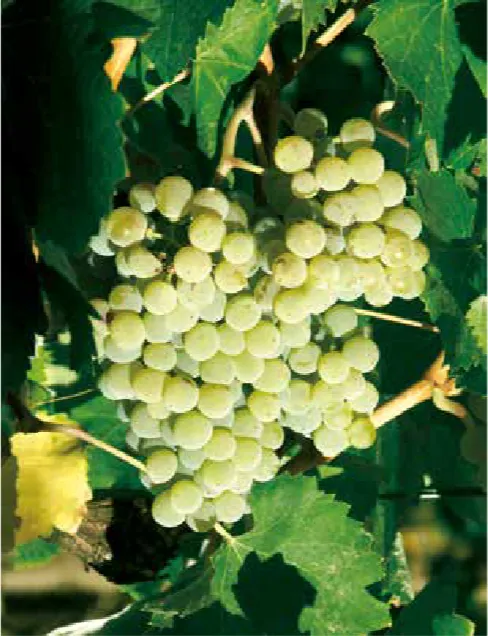

Kapitel 3 · Die portugiesischen Rebsorten
Fernão Pires (W)
Herkunft und Verbreitung:
Statistische Region Centro in Portugal. Bairrada, Provinz Estremadura, Tejo und Terras do Sado. Silva und Teles (1790) verzeichneten die Sorte in der Bairrada, im Douro und in der Provinz Estremadura, Lacerda Lobo (1790) ihr Vorkommen in Guarda. International wird sie in Australien, Neuseeland, Kalifornien und Südafrika angebaut.
Weinbeschreibung:
Dieser Wein überrascht mit der Eleganz und Komplexität seines Aromas, das sich durch einige vegetabile Noten und Pfeffertöne in Verbindung mit blumigen Noten wie Rose und Veilchen auszeichnet. Hinzu kommen mineralische Noten von Feuerstein oder fruchtige Noten von Zitrone. Mit der Reife nehmen Geschmack und Aroma Anklänge an Haselnuss, Pinienkerne und Harz an (V. Loureiro).
Einstufung:
Vinho de Qualidade DOC: Douro, Távora, Bairrada, Óbidos, Alenquer, Arruda, Torres Vedras, Tejo, Palmela.
Vinho de Qualidade IPR: Alcobaça, Valpaços, Encostas d’Aire.
Vinho Regional: Minho, Trás-os-Montes, alle Unterregionen der Beira Interior, alle Unterregionen der Provinz Estremadura, Tejo, Terras do Sado, Alentejo, Algarve, Açores.
Morphologie:

Junger Trieb (Form der Triebspitze): offen, mit karminroter Spitze, Behaarung mittlerer Dichte.
Junges Blatt: gelb mit bronzefarbenen Flecken, Behaarung mittlerer Dichte auf der Unterseite.
Junger Trieb: grün mit grünen Knospen. Ranken an den Internodien oberhalb des mittleren Triebdrittels.
Blütenstand (Blütengeschlecht): zwittrig.
Ausgewachsenes Blatt: klein, fünfeckig, fünflappig; mittelgrüne, unregelmäßige Spreite, mittlere Blasigkeit der Oberseite, runzelig; spärliche Behaarung auf der Unterseite; kurze konvexe Zähne. Leicht offene V-förmige Stielbucht. Offene V-förmige obere Seitenbuchten.
Traube: klein, zylindrisch, mittlere Dichte, Stiel mittellang.
Beere: leicht abgeflacht, mittelgroß, gelbgrün, Haut mittelstark, weiches Fruchtfleisch.
Phänologie:
Austrieb: früh.
Blüte: früh.
Farbumschlag der Beere: früh.
Lesereife der Beere: früh.
Vegetatives und weinbauliches Potenzial:
Wuchskraft der Triebe: hoch.
Schnittholzgewicht: 1.800–2.500 kg/ha.
Triebhaltung (Wuchsform): plagiotrop (hängend).
Trieblänge: einige sehr lang.
Fruchtbarkeitsindex der Knospen: mittel bis hoch.
Ertrag: mittel (5.000–10.000 l/ha). (Statistischer RNSV-Wert: 1,72 kg/Rebe, Mittel von mindestens 40 Klonen in Nelas über 2 Jahre.)
Ertragsbeständigkeit: beständig.
Gleichmäßigkeit des Ertrags: gleichmäßig.
Empfindlichkeit gegenüber abiotischen Faktoren: recht trockenheitsresistent. Triebe brechen leicht im Wind.
Anfälligkeit für Pilzkrankheiten: mittlere Anfälligkeit für Peronospora, Oidium und Botrytis.
Anfälligkeit für Schädlinge: anfällig für Springwurm, Traubenwickler und Pockenmilbe (Erinose).
Traubengröße: mittel bis klein.
Dichte der Traube: dicht.
Beerenhaut: mittelstark.
Kerne je Beere: mittel.
Erziehungssystem: passt sich an alle Erziehungssysteme an, besonders an den Kordon.
Boden für Qualitätswein: tiefgründige, gut durchlässige, sandige Podsolböden (Pegões), Schwemmlandböden und pliozäne Sandböden (Tejo).
Günstiges Klima: sehr vielseitige Sorte, verträgt gemäßigtes bis heißes Klima, solange der Boden Feuchtigkeit hat.
Pflanzdichte: alle üblichen Standweiten sind geeignet.
Unterlagen: keine bekannten Affinitätsprobleme. Muss zum Bodentyp passen.
Verrieseln/Kleinbeerigkeit: geringe Anfälligkeit.
Verderb reifer Beeren: Die Traube reift sehr früh und sollte daher vor der Überreife (in der großen Hitze) gelesen werden, damit sie Säure und Frische nicht verliert.
Vogelfraß: Wegen der frühen Reife braucht sie Schutz vor Vögeln.
Eignung für maschinelle Lese: wegen der Hitze zur Lesezeit wenig geeignet. Nachtlese empfohlen.
Önologisches Potenzial:
Weintyp: Qualitätswein und Verschnittweine.
Potenzieller Alkoholgehalt: hoch (11,5–13 % vol.). (Statistischer RNSV-Wert: 11,52 % vol., Mittel von mindestens 40 Klonen in Caldas da Rainha über 4 Jahre.)
Natürliche Säure des Mostes: mittel (Gesamtsäure 4,5–6,5 g/l; Äpfelsäure 0,4 g/l; Weinsäure 4,4 g/l). In heißen Regionen fällt die Säure manchmal abrupt unter 5 g/l, wenn der Alkohol 12 % übersteigt. Statistischer RNSV-Wert: 6,09 g/l (Mittel von mindestens 40 Klonen in Caldas da Rainha über 4 Jahre).

Oxidationsrisiko des Mostes: mittel.
Farbintensität des Weins: mittel.
Farbton des Weins: zitronengelb, hell gelblich.
Aromaprofil: sehr hoher Gehalt an Terpenoiden, über 400 μg/l, davon 203,8 μg/l Linalool, 186 μg/l α-Terpineol, 9 μg/l Nerol und 18,3 μg/l Geraniol. Sensorisch bestätigt sich das durch ihren Aromareichtum. In sehr heißen Regionen kann das Aroma recht aufdringlich werden.
Alterungspotenzial: Der Wein sollte jung getrunken werden, solange er sein fruchtiges Aroma bewahrt. Werden nicht überreife Beeren im Fass ausgebaut, hat er dennoch ein hohes Alterungspotenzial.